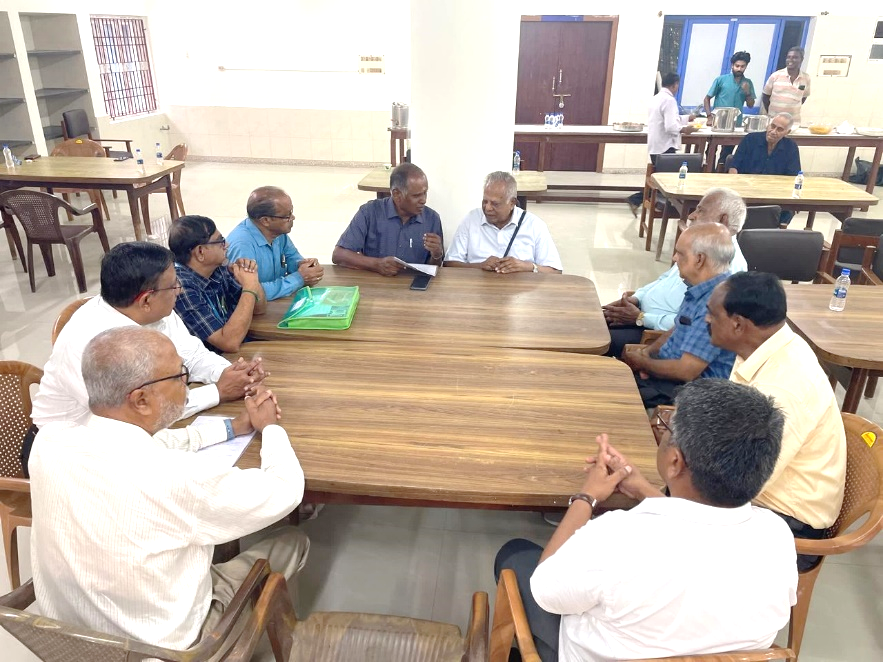
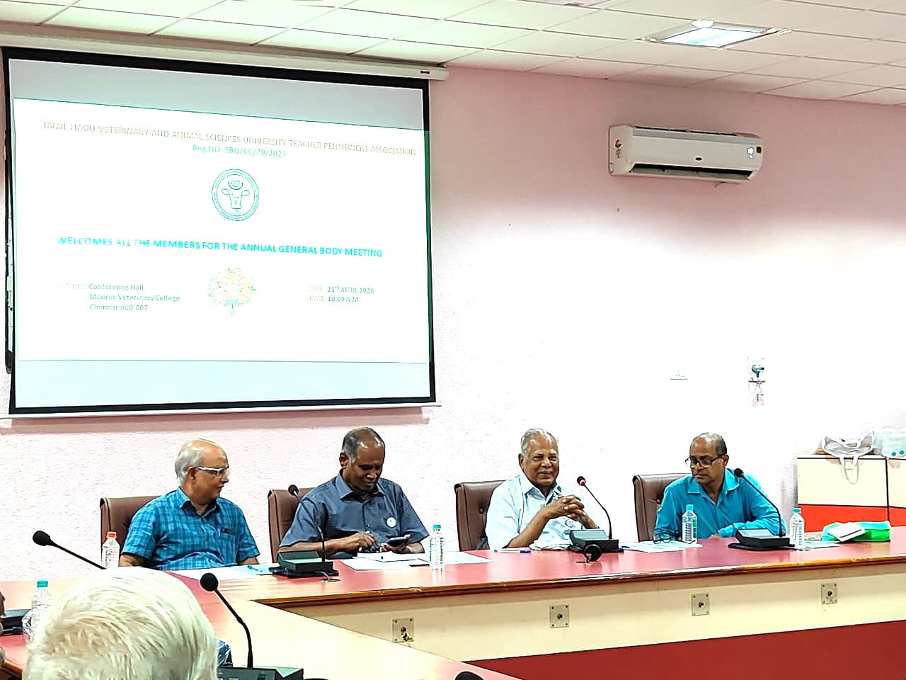
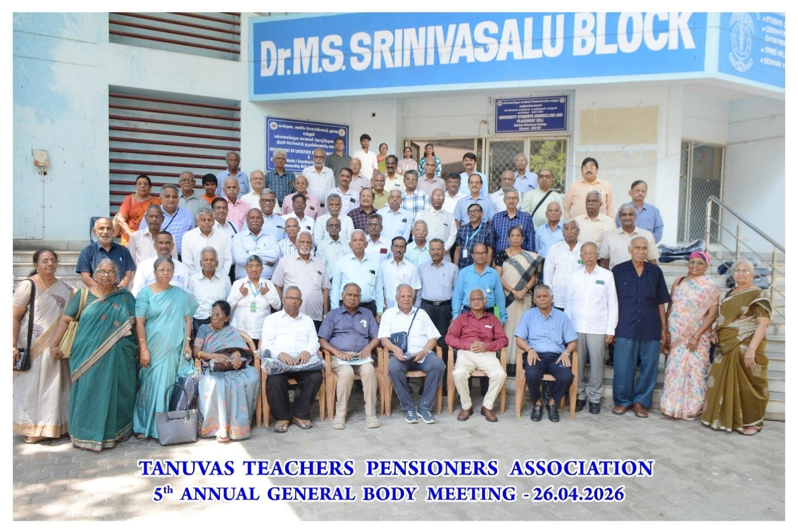

Final Preparations for the General Body Meeting and New Newsletter Initiatives
Seminar Hall, Bioinformatics Centre, Madras Veterinary College, Chennai
Dr. N. Natarajan, President, TTPA, presided over the meeting and appreciated the members for the efficient functioning of the Association.
Dr. K. S. Palaniswami, General Secretary, announced the renewal of the Association’s registration and reviewed the arrangements for the General Body Meeting.
The committee discussed registration, distribution of gifts, catering arrangements and the financial position of the Association. New initiatives for making the TTPA newsletter more accessible and user-friendly were also presented.
The members considered suitable recognition of voluntary contributors. The meeting concluded with a vote of thanks proposed by Dr. D. Kathiresan.


Honouring Excellence, Embracing Innovation: Fifth TTPA Annual General Body Meeting
Fifth Annual General Body Meeting • Conference Hall, Dr. Bertie D’Souza Block, Madras Veterinary College, Chennai
Dr. N. Natarajan, President, presided over the Fifth Annual General Body Meeting. Eighty-four participants, including a family pensioner, attended the programme.
The General Body reviewed the growth and welfare activities of the Association. The renewal of TTPA’s registration was announced, and the minutes of the Fourth Annual General Body Meeting were confirmed.
The Association’s financial position and accounts were presented and approved. Members were reminded that contributions to TTPA are voluntary and support its welfare and service activities.
Padma Shri Dr. N. Punniamurthy, Dr. P. Thangaraju, Dr. P. Mathialagan and Dr. G. Dhinakar Raj were recognised for distinguished professional and public service.
The Star of the Year 2025 awards were conferred on Dr. V. Balakrishnan and Dr. P. Sriram in recognition of their dedicated and distinguished service to TTPA.
Nonagenarian and octogenarian members were felicitated in appreciation of their lifelong contributions to the veterinary profession and the Association.
Members were briefed on Digital Life Certificates, additional pension, family-pension communication and other welfare provisions. The importance of keeping family pensioners informed about TTPA activities was emphasised.
Dr. V. Balakrishnan presented plans to develop the bimonthly newsletter into a user-friendly multimedia platform with searchable archives, text-to-speech support and hyperlinks for easy navigation.
The Association thanked its sponsors, student volunteers and members whose support contributed to the successful conduct of the programme.
Following remembrance of departed pensioners and family pensioners, the meeting concluded with a vote of thanks proposed by Dr. P. Ramadass and the National Anthem.
Digital Life Certificate
TTPA continued its assistance to pensioners and family pensioners in generating Digital Life Certificates (DLC). So far, 313 certificates, covering both teaching and non-teaching pensioners, have been generated through this facility. Members requiring assistance may approach TTPA for guidance.
Facilitation of Family Pension and LTA
TTPA continued to assist pensioners and family pensioners in matters relating to family pension, Pensioners Family Security Fund (PFSF) and Lifetime Arrears (LTA). During the reporting period, the Association facilitated the processing and submission of pension-related proposals and provided guidance wherever assistance was required.
Election of New Office Bearers
The General Body elected the new team of office bearers and Executive Committee members of TTPA for the term 2026–2028.
Sanction of Additional Pension
Additional pension was sanctioned to eligible members who had completed 80 years of age. TTPA continued to assist eligible pensioners in obtaining this benefit.
Pensioners Family Security Fund
Pensioners and family pensioners were advised to submit a revised nomination for the Pensioners Family Security Fund (PFSF) whenever the original nominee had predeceased the pensioner or family pensioner.